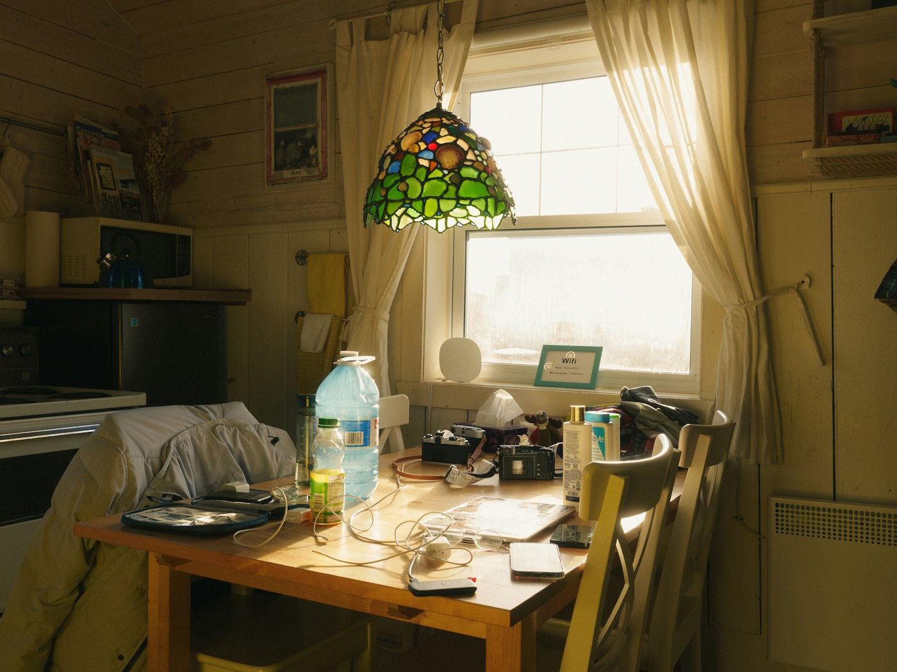
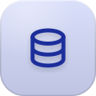
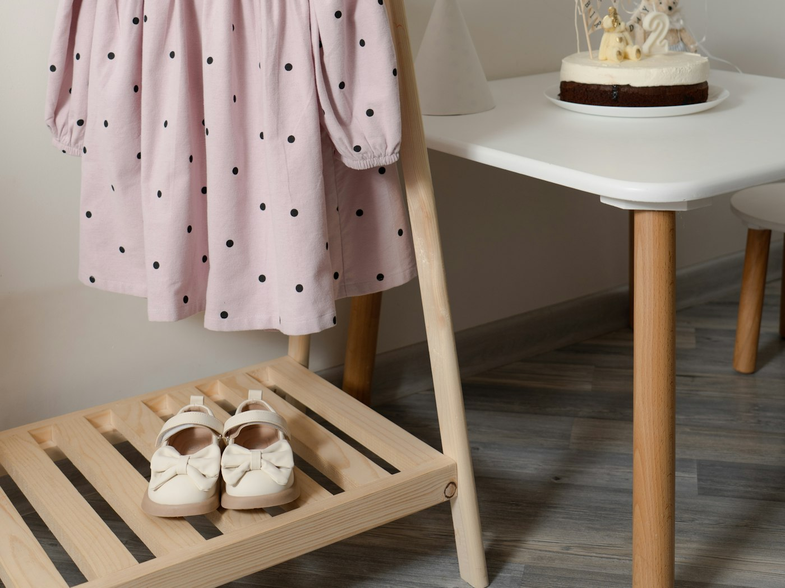
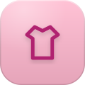
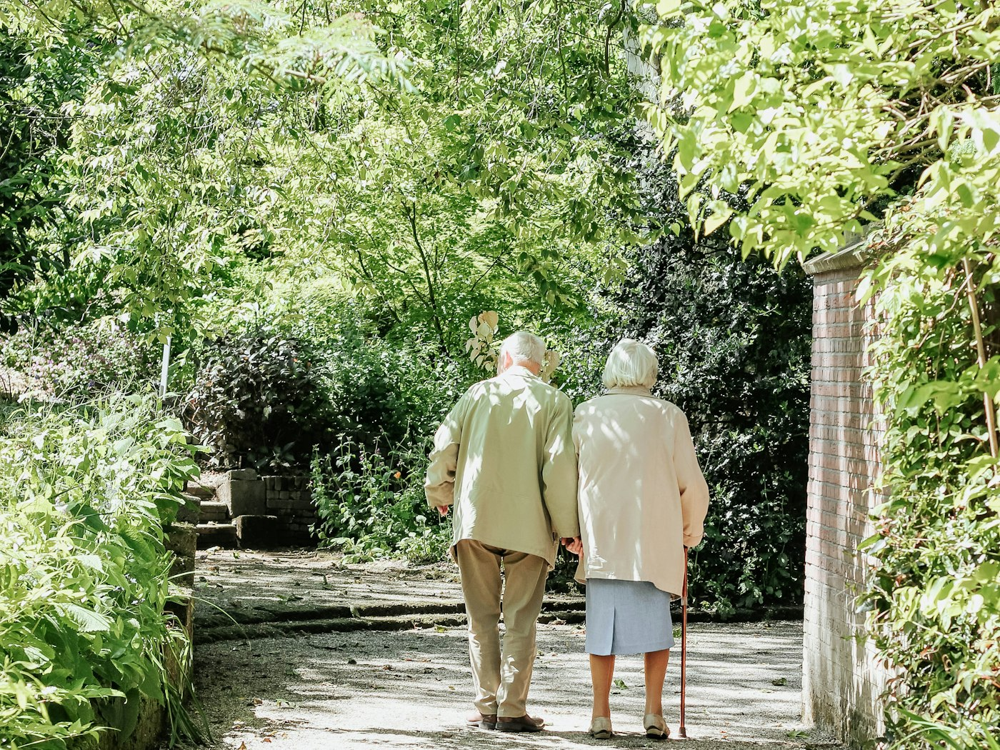
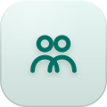
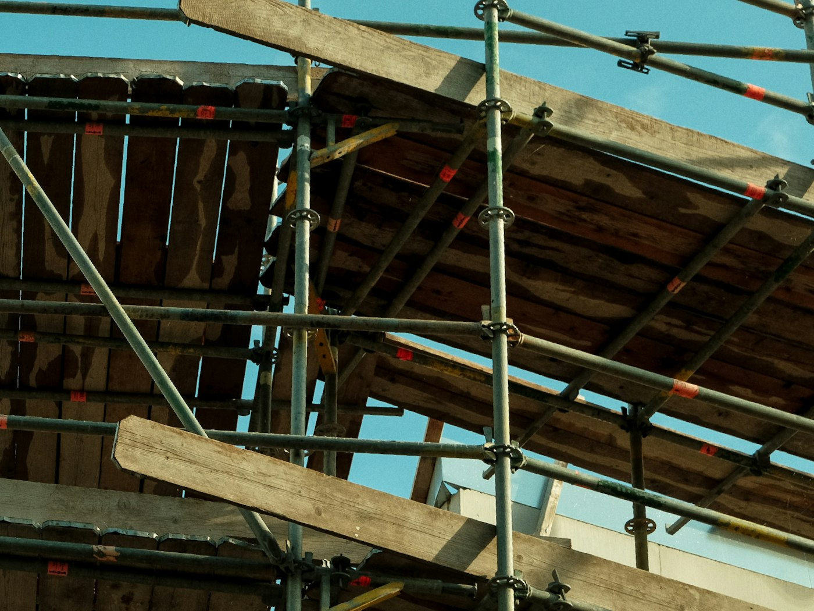
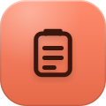

Schets
PensioenpraatLegt zzp'ers in vijf minuten uit wat ze voor hun pensioen moeten doen.
1/5


SleutelklaarEen kledingabonnement voor kinderen, tweedehands en meegroeiend.
Voorbeeld voor het prototype

Schets

Schets

Prototype